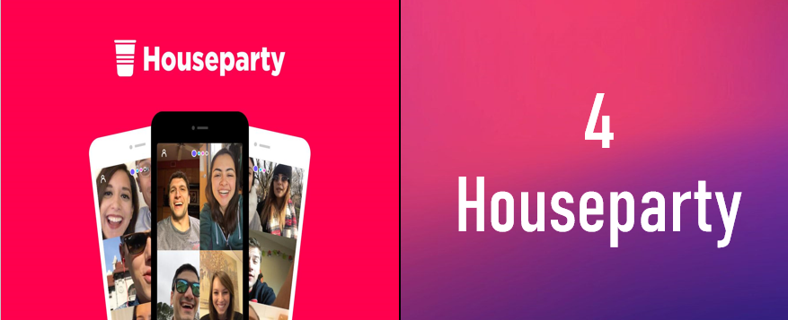
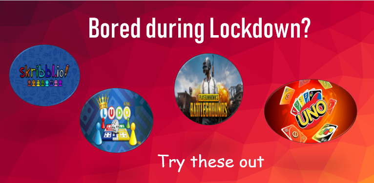

So you’re in lockdown. You’ve completed Netflix list and you’re tired of talking about the news with your flatmate.
Don’t fret, there are still plenty of free things left to do.
We’ve collated a list of 7 fun and free things to do using your internet connection or items you already have lying around to get you through the weeks of lockdown.
1. Movies and Web series
Whether you're stressing about work, feeling under the weather or have spent too much time buying into social media hype, there's nothing quite so wholesome as a movie so relaxing your entire body feels at one with the lounge chair.
So rush to this site now
"A good movie to watch". They have a wonderful collection of movies and shows. You can also watch according to your mood and feeling.
2. Read Books
You’re under coronavirus quarantine. What are you going to do with all this newfound time—and lack of outside entertainment? Why, read, of course!
There’s never been a better time to pick up a book. But what should you read under quarantine?
Don't Worry, we’ve got you covered. Our team put our heads together and selected our best recommendations of great books to read while you’re under coronavirus quarantine. So find your escape, whether it's a delightful romance or a classic to revisit.
Check the list here!!
3. Try Fitness Challenge
Missing the gym? Well there are plenty of fitness challenges you can try out from home, so you can emerge from lockdown fitter, leaner, or stronger.
Whether it's because you're alone at home or because you can't meet up with your gym buddy due to the enhanced community quarantine, at times like this, it's understandable how the motivation to stick to your fitness goals may be wavering.
You could try the
100 Pushup challenge,
Squat challenge, or just doing a
30-day bodyweight workout challenge to stay healthy at home for free.
Just make sure that you don’t push too hard early on, and warm up thoroughly before you do any exercise.
4. Houseparty

Do you miss ‘hanging out’ with your friends and desperately want to talk to all of them, together? While it might not be wise and advisable to do it physically, seems like there is a digital solution for it.
-Do it at a
Virtual Houseparty.
The app allows for large group video chats so you can get together for a drink, a chat, or just to see some friendly faces for a couple of hours. Alongside simultaneous video calls. You can also play in-app games while chatting. There are also separate virtual “rooms” that users can switch between, just like at a real house party.

5. Skribbl.io
Tired of pub quizzes? Completed Netflix? Try playing games. Games like Teen Patti,Tambola and many more have become popular than ever before at this time of crises. Games have opened the door to friendship during lockdown. Games were considered anti-social but during this situation, these have proved the best way to be connected. Even the
World Health Organisation is urging everyone to stay at home and play games.You all must have played
Ludo King, UNO and many other different types of games with your friends during this lockdown.
But I'm sure, you have not tried this one, It's a doodle game-
Skribbl.io This is a simple, easy to play, online web game which allows users to compete against each other by drawing a picture based on a prompt in a given time limit.
Go try it now!!.
6. Cook Something Delicious
One good thing about being home a lot is that you can finally spend time cooking things from scratch.
You can find great recipes online, like this
Indo- Chinese dishes .If you’re on a limited budget,
Jack Monroe’s recipes are specifically created for people on strict budgets or relying on food banks. Also checkout
Hebbars Kitchen Youtube channel to cook easily.
7. Blogging
This could be a great time to build your audience, especially if you have relatively cheap, indoor hobbies that you can share.
Interest in pastimes like cooking and board games has shot up over recent weeks – if your hobbies are trending, why not set up a blog and share your knowledge? You can set up a
WordPress account and blog for free, and take it from there.
If new to blogging, you can learn it from
here.